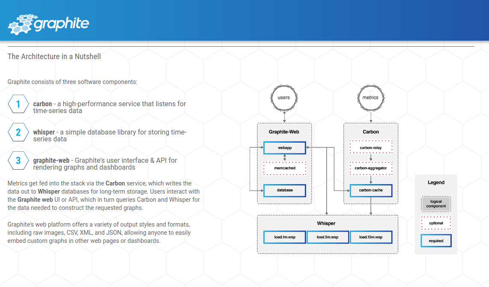

Hometalk
Metrics
StatsD
Open sourced by Etsy in 2011, statsd is a small daemon, written in JavaScript and running on NodeJS, which listens on a UDP socket for metric data, such as counters or timing information. This data is stored in memory and every 10 seconds (a configurable interval) it gets flushed out to a back end. In our case this back end is another open source application called Graphite.https://codeascraft.com/2011/02/15/measure-anything-measure-everything
StatsD Metric Types
- Counting
- Timing
- Gauges
- Sets
collectd – The system statistics collection daemon
collectd is a daemon which collects system and application performance metrics periodically and provides mechanisms to store the values in a variety of ways, for example in RRD files.
What does collectd do?
collectd gathers metrics from various sources, e.g. the operating system, applications, logfiles and external devices, and stores this information or makes it available over the networkGraphite
- Graphite Web App
- Carbon
- Whisper
Grafana

How to collect stats?
Timing
Metrics_Collector::getInstance()->timing('save_comment', $time);
Counting
Metrics_Collector::getInstance()->increment_counter('comments.error');